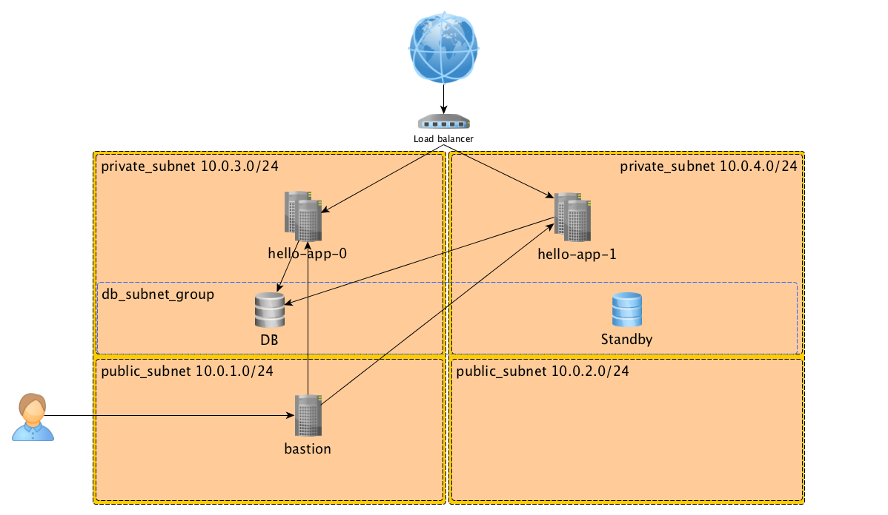
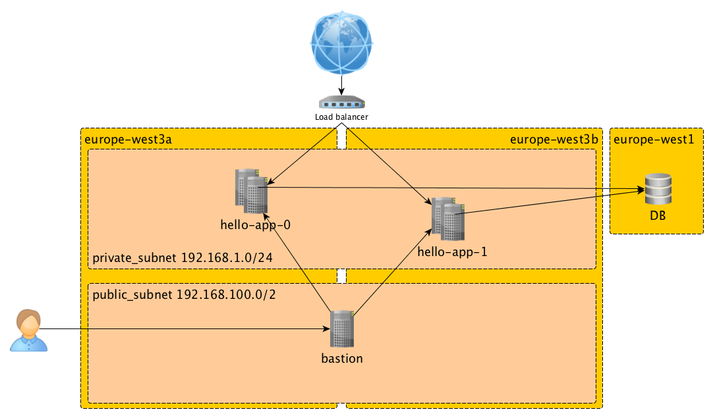
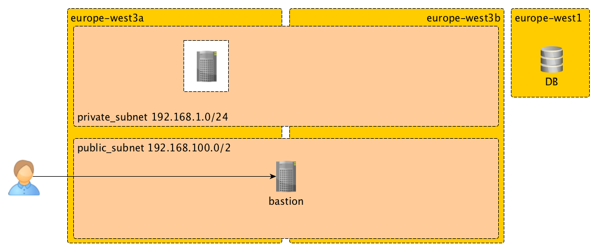

Introduction to:
Provisioning basic infrastructure on Google Cloud Platform with Terraform
Config Management Camp 2018


Why GCP?
- Broaden my horizon
- Build competence
- Know what I'm talking about
- Have fun!

AWS Architecture to reproduce
GCP Architecture result
Terraform
What does it do?
- Documents (infrastructure as code)
- Plans (no surprises)
- Graphs (parallelizes where possible)
- Automates (takes the human out of the equation)
- Provider/Cloud agnostic (sort of)
Why use it?
- Repeatable
- Testable
- Predictable
- Self-documenting
Terraform Components
- Configurations (
*.tf) - Providers (AWS, Google Cloud, Azure, DigitalOcean, OpenStack...)
- Resources (building blocks) →
- provider specific
- Variables (infrastructure as data)
- Data sources (fetch or compute data)
- Outputs (data "after the fact")
- Modules (for reuseability)
The juicy part
https://github.com/steinim/gcp-terraform-workshop
Source code
.
├── helloworld-java-app
└── terraform
├── modules
│ ├── compute
│ ├── db
│ ├── instance-template
│ ├── lb
│ ├── network
│ │ ├── bastion
│ │ ├── subnet
│ └── project
├── prod
└── test
Task 1: Getting ready
- Terraform admin project for the service account
- Remote state bucket
Basis variables
Tip! Put the exports in ~/.gcp_env and source it in ~/.bashrc
export GOOGLE_REGION=europe-west3 # change this if you want to use a different region
export TF_VAR_org_id=<your_org_id>
export TF_VAR_billing_account=<your_billing_account_id>
export TF_VAR_region=${GOOGLE_REGION}
export TF_VAR_user=${USER}
export TF_VAR_ssh_key=<path_to_your_public_ssh_key>
export TF_ADMIN=${USER}-tf-admin
export TF_CREDS=~/.config/gcloud/tf-admin.json
Find the values for <your_org_id> and <your_billing_account_id>:
gcloud beta organizations list
gcloud alpha billing accounts list
Create the Terraform service account
Create the service account and download the JSON credentials:
gcloud projects create ${TF_ADMIN} \
--organization ${TF_VAR_org_id} \
--set-as-default
gcloud alpha billing projects link ${TF_ADMIN} \
--billing-account ${TF_VAR_billing_account}
Grant permission to view the Admin Project and manage Cloud Storage:
gcloud projects add-iam-policy-binding ${TF_ADMIN} \
--member serviceAccount:terraform@${TF_ADMIN}.iam.gserviceaccount.com \
--role roles/viewer
gcloud projects add-iam-policy-binding ${TF_ADMIN} \
--member serviceAccount:terraform@${TF_ADMIN}.iam.gserviceaccount.com \
--role roles/storage.admin
Enable APIs
gcloud services enable cloudresourcemanager.googleapis.com
gcloud services enable cloudbilling.googleapis.com
gcloud services enable iam.googleapis.com
gcloud services enable compute.googleapis.com
Remote state
cd terraform/test
gsutil mb -l ${TF_VAR_region} -p ${TF_ADMIN} gs://${TF_ADMIN}
cat > backend.tf <<EOF
terraform {
backend "gcs" {
bucket = "${TF_ADMIN}"
prefix = "terraform/state/test"
}
}
EOF
Initialize the backend
terraform init
GCP provider and project
provider "google" {
region = "${var.region}"
}
resource "random_id" "id" {
byte_length = 4
prefix = "${var.name}-"
}
resource "google_project" "project" {
name = "${var.name}"
project_id = "${random_id.id.hex}"
billing_account = "${var.billing_account}"
org_id = "${var.org_id}"
}
resource "google_project_services" "project" {
project = "${google_project.project.project_id}"
services = [
"compute.googleapis.com"
]
}
Create a module for it
.
├── modules
│ └── project
│ ├── main.tf
├── prod
└── test
├── backend.tf
├── main.tf
└── vars.tf
# main.tf
module "project" {
source = "../modules/project" # path to module
name = "hello-${var.env}"
region = "${var.region}"
billing_account = "${var.billing_account}"
org_id = "${var.org_id}"
}
# vars.tf
variable "env" { default = "test" }
variable "region" { default = "europe-west3" }
variable "billing_account" {}
variable "org_id" {}
terraform plan
Refreshing Terraform state in-memory prior to plan...
The refreshed state will be used to calculate this plan, but will not be
persisted to local or remote state storage.
------------------------------------------------------------------------
Terraform will perform the following actions:
+ module.project.google_project.project
id: <computed>
billing_account: "0000C2-2C8D36-F6184D"
folder_id: <computed>
name: "hello-test"
number: <computed>
org_id: "396389084239"
policy_data: <computed>
policy_etag: <computed>
project_id: "${random_id.id.hex}"
skip_delete: <computed>
+ module.project.google_project_services.project
id: <computed>
project: "${google_project.project.project_id}"
services.#: "1"
services.2240314979: "compute.googleapis.com"
+ module.project.random_id.id
id: <computed>
b64: <computed>
b64_std: <computed>
b64_url: <computed>
byte_length: "4"
dec: <computed>
hex: <computed>
prefix: "hello-test-"
Plan: 3 to add, 0 to change, 0 to destroy.
terraform apply
...
module.project.random_id.id: Creating...
b64: "" => "<computed>"
b64_std: "" => "<computed>"
b64_url: "" => "<computed>"
byte_length: "" => "4"
dec: "" => "<computed>"
hex: "" => "<computed>"
prefix: "" => "hello-test-"
module.project.random_id.id: Creation complete after 0s (ID: 4r8CrQ)
module.project.google_project.project: Creating...
billing_account: "" => "0000C2-2C8D36-F6184D"
folder_id: "" => "<computed>"
name: "" => "hello-test"
number: "" => "<computed>"
org_id: "" => "396389084239"
policy_data: "" => "<computed>"
policy_etag: "" => "<computed>"
project_id: "" => "hello-test-e2bf02ad"
skip_delete: "" => "<computed>"
module.project.google_project.project: Still creating... (10s elapsed)
module.project.google_project.project: Creation complete after 17s (ID: hello-test-e2bf02ad)
module.project.google_project_services.project: Creating...
project: "" => "hello-test-e2bf02ad"
services.#: "" => "1"
services.2240314979: "" => "compute.googleapis.com"
module.project.google_project_services.project: Still creating... (10s elapsed)
...
module.project.google_project_services.project: Still creating... (1m30s elapsed)
module.project.google_project_services.project: Creation complete after 1m37s (ID: hello-test-e2bf02ad)
Apply complete! Resources: 3 added, 0 changed, 0 destroyed.
Profit 💰
Networking and bastion host
Network module
modules/network/
├── vars.tf
├── main.tf
├── outputs.tf
├── bastion
│ ├── main.tf
│ ├── outputs.tf
│ └── vars.tf
├── subnet
│ ├── main.tf
│ ├── outputs.tf
│ └── vars.tf
...
module "network" {
source = "../modules/network"
name = "${module.project.name}"
project = "${module.project.id}"
region = "${var.region}"
zones = "${var.zones}"
webservers_subnet_name = "webservers"
webservers_subnet_ip_range = "${var.webservers_subnet_ip_range}"
bastion_image = "${var.bastion_image}"
bastion_instance_type = "${var.bastion_instance_type}"
user = "${var.user}"
ssh_key = "${var.ssh_key}"
}
# modules/network
# main.tf
resource "google_compute_network" "network" {
name = "${var.name}-network"
project = "${var.project}"
}
resource "google_compute_firewall" "allow-ssh-from-everywhere-to-bastion" {
name = "${var.name}-allow-ssh-from-everywhere-to-bastion"
project = "${var.project}"
network = "${var.name}-network"
allow {
protocol = "tcp"
ports = ["22"]
}
source_ranges = ["0.0.0.0/0"]
target_tags = ["bastion"]
}
resource "google_compute_firewall" "allow-ssh-from-bastion-to-webservers" {
name = "${var.name}-allow-ssh-from-bastion-to-webservers"
project = "${var.project}"
network = "${var.name}-network"
direction = "EGRESS"
allow {
protocol = "tcp"
ports = ["22"]
}
target_tags = ["http"]
}
resource "google_compute_firewall" "allow-ssh-to-webservers-from-bastion" {
name = "${var.name}-allow-ssh-to-private-network-from-bastion"
project = "${var.project}"
network = "${var.name}-network"
direction = "INGRESS"
allow {
protocol = "tcp"
ports = ["22"]
}
source_tags = ["bastion"]
}
resource "google_compute_firewall" "allow-http-to-appservers" {
name = "${var.name}-allow-http-to-appservers"
project = "${var.project}"
network = "${var.name}-network"
allow {
protocol = "tcp"
ports = ["80"]
}
source_ranges = ["0.0.0.0/0"]
source_tags = ["http"]
}
module "webservers_subnet" {
source = "./subnet"
project = "${var.project}"
region = "${var.region}"
name = "${var.webservers_subnet_name}"
network = "${google_compute_network.network.self_link}"
ip_range = "${var.webservers_subnet_ip_range}"
}
module "bastion" {
source = "./bastion"
name = "${var.name}-bastion"
project = "${var.project}"
zones = "${var.zones}"
image = "${var.bastion_image}"
instance_type = "${var.bastion_instance_type}"
user = "${var.user}"
ssh_key = "${var.ssh_key}"
}
---
# vars.tf
variable "name" {}
variable "project" {}
variable "region" {}
variable "zones" { type = "list" }
variable "webservers_subnet_name" {}
variable "webservers_subnet_ip_range" {}
variable "bastion_image" {}
variable "bastion_instance_type" {}
variable "user" {}
variable "ssh_key" {}
---
# outputs.tf
output "name" {
value = "${google_compute_network.network.name}"
}
output "bastion_public_ip" {
value = "${module.bastion.public_ip}"
}
output "gateway_ipv4" {
value = "${google_compute_network.network.gateway_ipv4}"
}
# modules/network/subnet
# main.tf
resource "google_compute_subnetwork" "subnet" {
name = "${var.name}"
project = "${var.project}"
region = "${var.region}"
network = "${var.network}"
ip_cidr_range = "${var.ip_range}"
}
---
# vars.tf
variable "name" {}
variable "project" {}
variable "region" {}
variable "network" {}
variable "ip_range" {}
---
# outputs.tf
output "ip_range" {
value = "${google_compute_subnetwork.subnet.ip_cidr_range}"
}
output "self_link" {
value = "${google_compute_subnetwork.subnet.self_link}"
}
# modules/network/bastion
# main.tf
resource "google_compute_instance" "bastion" {
name = "${var.name}"
project = "${var.project}"
machine_type = "${var.instance_type}"
zone = "${element(var.zones, 0)}"
metadata {
ssh-keys = "${var.user}:${file("${var.ssh_key}")}"
}
boot_disk {
initialize_params {
image = "${var.image}"
}
}
network_interface {
subnetwork = "${var.subnet_name}"
access_config {
# Ephemeral IP - leaving this block empty will generate a new external IP and assign it to the machine
}
}
tags = ["bastion"]
}
---
# vars.tf
variable "name" {}
variable "project" {}
variable "zones" { type = "list" }
variable "subnet_name" {}
variable "image" {}
variable "instance_type" {}
variable "user" {}
variable "ssh_key" {}
---
# outputs.tf
output "private_ip" {
value = "${google_compute_instance.bastion.network_interface.0.address}"
}
output "public_ip" {
value = "${google_compute_instance.bastion.network_interface.0.access_config.0.assigned_nat_ip}"
}
Profit 💰
ssh -i ~/.ssh/id_rsa $USER@$(terraform output --module=network bastion_public_ip)
[steinim@hello-test-bastion ~]$
Next: Instance template
Instance template module
modules/instance-template
├── main.tf
├── outputs.tf
├── scripts
│ └── startup.sh
└── vars.tf
# main.tf
...
module "instance-template" {
source = "../modules/instance-template"
name = "${module.project.name}"
env = "${var.env}"
project = "${module.project.id}"
region = "${var.region}"
network_name = "${module.network.name}"
image = "${var.app_image}"
instance_type = "${var.app_instance_type}"
user = "${var.user}"
ssh_key = "${var.ssh_key}"
---
# vars.tf
...
variable "appserver_count" { default = 2 }
variable "app_image" { default = "centos-7-v20170918" }
variable "app_instance_type" { default = "f1-micro" }
# main.tf
resource "google_compute_instance_template" "webserver" {
name = "${var.name}-webserver-instance-template"
project = "${var.project}"
machine_type = "${var.instance_type}"
region = "${var.region}"
metadata {
ssh-keys = "${var.user}:${file("${var.ssh_key}")}"
}
disk {
source_image = "${var.image}"
auto_delete = true
boot = true
}
network_interface {
network = "${var.network_name}"
access_config {
# Ephemeral IP - leaving this block empty will generate a new external IP and assign it to the machine
}
}
metadata_startup_script = "${file("${path.module}/scripts/startup.sh")}"
tags = ["http"]
labels = {
environment = "${var.env}"
}
}
---
# vars.tf
variable "name" {}
variable "project" {}
variable "network_name" {}
variable "image" {}
variable "instance_type" {}
variable "user" {}
variable "ssh_key" {}
variable "env" {}
variable "region" {}
---
# outputs.tf
output "instance_template" {
value = "${google_compute_instance_template.webserver.self_link}"
}
---
# scripts/startup.sh
#!/bin/bash
yum install -y nginx java
cat <<'EOF' > /etc/nginx/nginx.conf
user nginx;
worker_processes auto;
error_log /var/log/nginx/error.log;
pid /run/nginx.pid;
events {
worker_connections 1024;
}
http {
log_format main '$remote_addr - $remote_user [$time_local] "$request" '
'$status $body_bytes_sent "$http_referer" '
'"$http_user_agent" "$http_x_forwarded_for"';
access_log /var/log/nginx/access.log main;
server {
listen 80 default_server;
server_name _;
location / {
proxy_pass http://127.0.0.1:1234;
}
}
}
EOF
setsebool -P httpd_can_network_connect true
systemctl enable nginx
systemctl start nginx
curl -o app.jar https://morisbak.net/files/devops.jar
java -jar app.jar > /dev/null 2>&1 &
Profit 💰
Auto scaling and load balancing
😰 What you'll need 😰
- google_compute_global_forwarding_rule
- google_compute_target_http_proxy
- google_compute_url_map
- google_compute_backend_service
- google_compute_http_health_check
- google_compute_instance_group_manager
- google_compute_target_pool
- google_compute_instance_group
- google_compute_autoscaler
Load balancer module
modules/lb
├── main.tf
└── vars.tf
# main.tf
...
module "lb" {
source = "../modules/lb"
name = "${module.project.name}"
project = "${module.project.id}"
region = "${var.region}"
count = "${var.appserver_count}"
instance_template = "${module.instance-template.instance_template}"
zones = "${var.zones}"
}
# main.tf
resource "google_compute_global_forwarding_rule" "global_forwarding_rule" {
name = "${var.name}-global-forwarding-rule"
project = "${var.project}"
target = "${google_compute_target_http_proxy.target_http_proxy.self_link}"
port_range = "80"
}
resource "google_compute_target_http_proxy" "target_http_proxy" {
name = "${var.name}-proxy"
project = "${var.project}"
url_map = "${google_compute_url_map.url_map.self_link}"
}
resource "google_compute_url_map" "url_map" {
name = "${var.name}-url-map"
project = "${var.project}"
default_service = "${google_compute_backend_service.backend_service.self_link}"
}
resource "google_compute_backend_service" "backend_service" {
name = "${var.name}-backend-service"
project = "${var.project}"
port_name = "http"
protocol = "HTTP"
backend {
group = "${element(google_compute_instance_group_manager.webservers.*.instance_group, 0)}"
balancing_mode = "RATE"
max_rate_per_instance = 100
}
backend {
group = "${element(google_compute_instance_group_manager.webservers.*.instance_group, 1)}"
balancing_mode = "RATE"
max_rate_per_instance = 100
}
health_checks = ["${google_compute_http_health_check.healthcheck.self_link}"]
}
resource "google_compute_http_health_check" "healthcheck" {
name = "${var.name}-healthcheck"
project = "${var.project}"
port = 80
request_path = "/"
}
resource "google_compute_instance_group_manager" "webservers" {
name = "${var.name}-instance-group-manager-${count.index}"
project = "${var.project}"
instance_template = "${var.instance_template}"
base_instance_name = "${var.name}-webserver-instance"
count = "${var.count}"
zone = "${element(var.zones, count.index)}"
named_port {
name = "http"
port = 80
}
}
resource "google_compute_autoscaler" "autoscaler" {
name = "${var.name}-scaler-${count.index}"
project = "${var.project}"
count = "${var.count}"
zone = "${element(var.zones, count.index)}"
target = "${element(google_compute_instance_group_manager.webservers.*.self_link, count.index)}"
autoscaling_policy = {
max_replicas = 3
min_replicas = 1
cooldown_period = 60
cpu_utilization {
target = 0.6
}
}
}
---
# vars.tf
variable "name" {}
variable "project" {}
variable "region" {}
variable "count" {}
variable "instance_template" {}
variable "zones" { type = "list" }
Profit 💰
Jump through bastion
ssh -J $USER@$(terraform output --module=network bastion_public_ip) $USER@10.156.0.3
[steinim@hello-test-webserver-instance-hr80 ~]$
Load balancer created
and ... 🎉
💰 🚀🚀🚀🚀 💰
Thank you!
Slides:
http://steinim.github.io/slides/terraform-on-gcp/
Workshop:
https://github.com/steinim/gcp-terraform-workshop